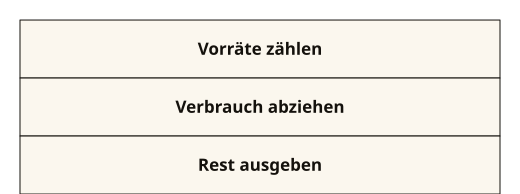
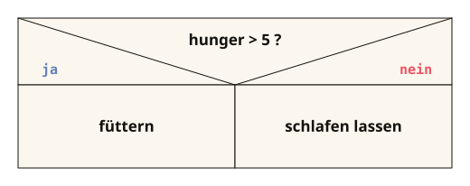
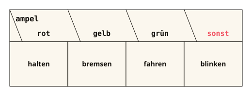

Kapitel 6 von 11 · if, else, switch, Verknüpfungen
Verzweigungen
Bisher lief dein Code Zeile für Zeile von oben nach unten. Jetzt verzweigt er wie eine Weiche: Je nach Bedingung läuft der eine oder der andere Teil.
DAS PROBLEM
Draußen sind 5 Grad. Was rät dieses Programm?
Wetter.java
int temperature = 5;
System.out.println("Off to the outdoor pool!");Bei 5 Grad ins Freibad? Das Programm sagt immer dasselbe, egal wie kalt es ist.
Wetter.java
int temperature = 5;
if (temperature > 25) {
System.out.println("Off to the outdoor pool!");
} else {
System.out.println("Jacket on!");
}Jetzt prüft das Programm die Temperatur und wählt danach einen Zweig. Wie Verzweigungen funktionieren, zeigt dieses Kapitel.
Danach kannst du
- mit
if,else ifundelseVerzweigungen schreiben - erklären, warum Texte mit
equals()statt mit==verglichen werden - Bedingungen mit
&&,||und!zusammensetzen und ihre Wahrheitstabelle aufstellen - eine Mehrfachauswahl mit
switchund->schreiben - Sequenz, Verzweigung und Mehrfachauswahl als Struktogramm zeichnen
6.1 Verzweigungen mit if, else if und else
Ein Programm soll je nach Lage anders handeln: Freibad oder Hoodie, Einlass oder Quarantäne. if prüft eine Bedingung und wählt danach genau einen Weg.
AUFBAU · KLICK AUF EINEN TEIL
if (Bedingung) {
Anweisungen, wenn die Bedingung stimmt
} else if (andere Bedingung) {
Anweisungen, wenn erst diese stimmt
} else {
Anweisungen für alle übrigen Fälle
}else if und else sind freiwillig. Die Bedingung ergibt immer true oder false, meist durch einen Vergleich: > < >= <=, == (gleich?) und != (ungleich?).
if leitet die Verzweigung ein: erst die Bedingung in runden Klammern, dann der Block. Hinter die schließende Klammer gehört kein Semikolon: Bei if (temperature > 25); ist das if schon am Semikolon zu Ende, und der Block darunter läuft immer.temperature > 25. Eine boolean-Variable genügt allein: if (vaccinated). Für Gleichheit steht ==, denn if (age = 18) ist eine Zuweisung und meldet der Compiler als Fehler.} else schließt die Klammer den Block davor, dann beginnt der nächste Zweig. Ohne Klammern gehört nur die erste Anweisung zum Zweig, auch wenn die zweite genauso eingerückt ist.; am Ende, etwa System.out.println("Outdoor pool!");. Ein Zweig darf beliebig viele Anweisungen enthalten, auch ein weiteres if.else if prüft eine weitere Bedingung, aber nur, wenn alle Bedingungen davor false waren. Davon darf es beliebig viele geben, und die Reihenfolge zählt: Steht temperature > 10 vor temperature > 25, kommt der Zweig für über 25 Grad nie an die Reihe.else hat keine Bedingung. Sein Block läuft, wenn keine Bedingung davor gestimmt hat, deshalb steht er immer als letzter Zweig. Fehlt else, läuft in diesem Fall gar kein Zweig.Wetter.java (Ausschnitt)
if (temperature > 25) {
System.out.println("Outdoor pool!");
} else if (temperature > 10) {
System.out.println("So-so. Jacket optional.");
} else {
System.out.println("Hoodie on, tea on.");
}ZEILE FÜR ZEILE
if (temperature > 25) | prüft den Vergleich. Ist er true, läuft der Block darunter, und alle übrigen Zweige werden übersprungen. |
{ … } | der Block: Alles zwischen den geschweiften Klammern gehört zu diesem Zweig. |
else if (temperature > 10) | wird nur geprüft, wenn alles davor false war. Hier steht also schon fest: höchstens 25 Grad. |
else | der Rest: läuft, wenn keine Bedingung gepasst hat, und braucht deshalb keine. |
Erst du, dann Java
Was gibt der Code bei genau 25 Grad aus, und was bei genau 10 Grad? Notier deine Vermutung, bevor du den Regler bewegst.
Bei 25 Grad „So-so. Jacket optional.“: 25 > 25 ist false, 25 > 10 ist true. Bei 10 Grad „Hoodie on, tea on.“, denn auch 10 > 10 ist false. An den Grenzen entscheidet, ob > oder >= dasteht.
Merk dir das
Es läuft immer genau ein Zweig: der erste, dessen Bedingung stimmt.
=speichert einen Wert in einer Variablen (Zuweisung),==prüft, ob zwei Werte gleich sind (Vergleich).if (age = 18)→ Compiler-Fehler.if (age == 18)→ correct.
Aufgabe 6.1.1: Welcher Branch läuft?
Trag für jede Temperatur ein, welcher Zweig des Codes oben läuft: if, else if oder else.
Welcher Zweig?
temperatur Zweig
30
26
18
11
0
-3 Level-Up: Kurzform: der ternäre Operatoroptional
Wählst du nur einen Wert aus, sind fünf Zeilen if/else übertrieben. Die Kurzform passt in eine Zeile.
AUFBAU · KLICK AUF EINEN TEIL
Bedingung ? Wert, wenn wahr : Wert, wenn falschDas Ergebnis ist ein Wert. Er steht rechts vom = oder dort, wo ein Wert gebraucht wird.
boolean, etwa hunger > 5. Sie wird zuerst ausgewertet und entscheidet, welcher der beiden Werte das Ergebnis ist.true ist, etwa "feed". Hier steht ein Wert, keine Anweisung: System.out.println(…) gehört nicht hierher.if ohne else braucht der ternäre Operator immer beide Werte.false ist, etwa "keep sleeping". Beide Werte müssen zum Typ der Variablen links vom = passen, bei String message also zwei Strings.Fünf Zeilen, die eine sein könnten
String message;
if (hunger > 5) {
message = "feed";
} else {
message = "keep sleeping";
}Shorthand.java
public class Shorthand {
public static void main(String[] args) {
int hunger = 7;
String message = hunger > 5 ? "feed" : "keep sleeping";
System.out.println(message);
}
}ZEILE FÜR ZEILE
hunger > 5 | die Frage: Ist der Hunger größer als 5? |
? "feed" | Hinter dem Fragezeichen steht der Wert für true. |
: "keep sleeping" | Der Doppelpunkt trennt die Antworten, dahinter steht der Wert für false. |
Merk dir das
Der ternäre Operator liefert einen Wert. Er ersetzt kein if mit mehreren Anweisungen. Und nicht verschachteln.
6.2 String-Vergleich mit equals()
Oft hängt die Entscheidung an einer Eingabe: Hat jemand „yes“ getippt? Zahlen vergleicht ==, Texte vergleicht man mit equals.
AUFBAU · KLICK AUF EINEN TEIL
text.equals("Vergleichstext")
text.equalsIgnoreCase("Vergleichstext")Beide liefern true oder false und passen damit direkt in ein if. Die zweite Form achtet nicht auf Groß- und Kleinschreibung.
answer. Kommt er von der Tastatur, entferne vorher mit trim() die Leerzeichen am Rand, denn " yes".equals("yes") ergibt false.equals vergleicht den Inhalt zweier Strings Zeichen für Zeichen, Groß- und Kleinschreibung eingeschlossen: "Yes".equals("yes") ergibt false. Für Strings nimmst du nie ==, denn das vergleicht nicht den Inhalt.equalsIgnoreCase: „ignore case“ heißt „Groß- und Kleinschreibung ignorieren“. "YES".equalsIgnoreCase("yes") ergibt true. Leerzeichen zählen aber weiterhin: " yes" und "yes" bleiben verschieden."yes". Statt eines festen Textes geht auch eine String-Variable, dann ohne Anführungszeichen: expectedAnswer.equals(answer).Admission.java
import java.util.Scanner;
public class Admission {
public static void main(String[] args) {
Scanner keyboard = new Scanner(System.in);
System.out.println("Are you vaccinated? (yes/no)");
String answer = keyboard.nextLine().trim().toLowerCase();
if (answer.equals("yes")) {
System.out.println("Welcome to the camp.");
} else {
System.out.println("Quarantine first.");
}
}
}ZEILE FÜR ZEILE
keyboard.nextLine() | liest die Zeile so, wie sie getippt wurde, Leerzeichen eingeschlossen. |
.trim().toLowerCase() | bereitet sie mit den String-Methoden aus Kapitel 5 auf: Leerzeichen am Rand weg, alles klein. Aus „ JA “ wird „yes“. |
answer.equals("yes") | vergleicht den Inhalt: true, wenn genau „yes“ darin steht. |
else | alles andere, auch „no“, „jo“ oder ein leerer Text. |
Merk dir das
Texte vergleicht man nie mit ==: Es prüft bei Strings nicht den Inhalt und liefert bei gleichen Texten oft false (das Warum: Kapitel 9). Eiserne Regel: Zahlen → ==, Texte → .equals().
Aufgabe 6.2.1: Fünf Vergleiche, ein Yes
Getippt wurde „ Yes “, mit einem Leerzeichen davor und dahinter. Genau so steht es in input. Was ergibt jede Zeile: true oder false?
Fünf Vergleiche
| Vergleich | Ergebnis |
|---|---|
input.equals("Yes") |
|
input.trim().equals("Yes") |
|
input.trim().equals("yes") |
|
input.trim().equalsIgnoreCase("yes") |
|
input.trim() == "Yes" |
6.3 Logische Operatoren: &&, || und !
Eine Bedingung reicht selten: Hinein darf nur, wer volljährig ist und ein Ticket hat. Dafür verknüpft man Bedingungen mit genau drei Zeichen.
AUFBAU · KLICK AUF EINEN TEIL
Bedingung && Bedingung UND: beide müssen stimmen
Bedingung || Bedingung ODER: eine reicht, zwei Striche
!Bedingung NICHT: dreht true und false umVollständig beschreibt das eine Wahrheitstabelle. Bei zwei Bedingungen hat sie genau vier Zeilen, mehr Fälle gibt es nicht.
boolean, etwa ein Vergleich wie age >= 18 oder eine Variable wie hasTicket. Die Variable muss deshalb auf beiden Seiten stehen: age >= 18 && < 65 meldet der Compiler als Fehler, richtig ist age >= 18 && age < 65.&& (UND) ergibt nur true, wenn beide Seiten true sind, etwa bei age >= 18 && hasTicket. Ist die linke Seite schon false, wird die rechte gar nicht mehr ausgewertet: Das heißt Kurzschluss-Auswertung.|| (ODER) ergibt true, sobald mindestens eine Seite true ist, auch wenn beide es sind. Stehen && und || in einer Bedingung, wird && zuerst ausgewertet. Klammern machen die Reihenfolge eindeutig.! (NICHT) steht direkt vor einer Bedingung: !bitten ist true, wenn bitten den Wert false hat. Es bindet am stärksten, !a && b heißt also (!a) && b. Soll es für einen ganzen Ausdruck gelten, setz Klammern: !(a && b).| A | B | A && B | A || B |
|---|---|---|---|
| false | false | false | false |
| false | true | false | true |
| true | false | false | true |
| true | true | true | true |
| A | !A |
|---|---|
| false | true |
| true | false |
Merk dir das
Javas ODER ist ein einschließendes Oder.
- Umgangssprache: „Kaffee oder Tee?“ heißt meist eins von beiden, nicht beides.
||lieferttrue, sobald mindestens eine Seite wahr ist, auch wenn beide es sind.- Die letzte Zeile der ODER-Spalte (beide wahr) kommt in Prüfungen dran.
Kurzschluss.java (Ausschnitt)
if (name != null && name.equals("Mia")) {
System.out.println("Hello Mia.");
}ZEILE FÜR ZEILE
name != null | prüft zuerst, ob in name überhaupt ein Text steckt. |
&& | Ist die linke Seite false, steht das Ergebnis schon fest, und die rechte wird gar nicht mehr ausgewertet. Das heißt Kurzschluss-Auswertung. Bei || genauso: Ist links schon true, steht das Ergebnis fest. |
name.equals("Mia") | läuft also nur, wenn name einen Text enthält. In umgekehrter Reihenfolge gäbe es eine NullPointerException. |
Erst du, dann Java
Was ergibt age > 12 || age < 5 && hasCompanion für
age = 15 und hasCompanion = false? Notier deine Vermutung,
bevor du weiterliest, und achte darauf, was zuerst ausgewertet wird.
Die Rangfolge: ! bindet am stärksten, dann
&&, dann ||. Oben heißt das also
age > 12 || (age < 5 && hasCompanion), und damit
true || (false && false), also true. Von links nach rechts gerechnet
käme false heraus. Wer unsicher ist,
klammert. Geübte Leute klammern trotzdem.
Aufgabe 6.3.2: Die Wahrheitstabelle selbst
Klick in jeder Zelle an, was herauskommt: true oder false.
Neu ist die letzte Spalte: != fragt, ob die beiden
verschieden sind. In genau einer Zeile unterscheidet sie sich von
||: Das ist das ausschließende Oder der Umgangssprache.
Wahrheitstabelle: ausfüllen
| A | B | A && B | A || B | A != B |
|---|---|---|---|---|
| false | false | |||
| false | true | |||
| true | false | |||
| true | true |
| A | !A |
|---|---|
| false | |
| true |
Aufgabe 6.3.3: Vom Code zur Tabelle
Am Tor des Lagers steht diese Bedingung. Stell ihre Wahrheitstabelle auf: erst die
Hilfsspalte !bitten, dann das Ergebnis.
Tor.java (Ausschnitt)
if (!bitten || vaccinated) {
System.out.println("Welcome to the camp.");
}Wer darf hinein?
| bitten | vaccinated | !bitten | Ergebnis |
|---|---|---|---|
| false | false | ||
| false | true | ||
| true | false | ||
| true | true |
Und jetzt der Satz dazu
In Worten: Hinein darf, wer nicht gebissen wurde oder geimpft ist.
Spannend ist die letzte Zeile: gebissen und geimpft ergibt true.
Kein Fehler in der Tabelle, sondern eine Entscheidung im Code. Ob das am Lagertor klug ist?
Solche Fragen klärt eine Wahrheitstabelle, bevor das Programm läuft.
Aufgabe 6.3.4: Von der Sprache zum Code
Die Regel für die Nachtwache lautet: Wer ausgeruht und nicht verletzt ist, darf. Der Wachchef darf immer. Schreib die Bedingung und stell die Tabelle auf: drei Variablen, acht Zeilen.
Nachtwache.java: die Bedingung
if () { … }Darf Wache halten?
| rested | injured | boss | darf Wache? |
|---|---|---|---|
| false | false | false | |
| false | false | true | |
| false | true | false | |
| false | true | true | |
| true | false | false | |
| true | false | true | |
| true | true | false | |
| true | true | true |
Level-Up: Eine Bedingung richtig verneinenoptional
Du willst das Gegenteil einer Bedingung? Einfach überall ein ! davorsetzen
geht schief. Es gilt:
Zwei Gleichungen, die immer stimmen
!(a && b) is the same as !a || !b
!(a || b) is the same as !a && !bBeim Verneinen wechselt also auch der Operator: Aus UND wird ODER und umgekehrt. Prüf es an der Tabelle von Aufgabe 6.3.2 nach. Das sind die Gesetze von De Morgan, in Prüfungen beliebt.
6.4 Mehrfachauswahl mit switch
Prüfst du eine Variable gegen viele feste Werte, wird eine else if-Kette lang und unübersichtlich. switch ordnet jedem Wert seinen Fall zu. Für Bereiche wie „größer als 25“ bleibt es beim if.
AUFBAU · KLICK AUF EINEN TEIL
switch (Variable) {
case Wert -> Anweisung;
case Wert, Wert -> Anweisung;
default -> Anweisung für alle übrigen Werte;
}switch prüft nur auf Gleichheit, bei int, char, String und enum; long, double und boolean gehen nicht. Braucht ein Fall mehrere Anweisungen, kommen sie in geschweifte Klammern: default -> { … }.
switch leitet die Mehrfachauswahl ein: in runden Klammern, was geprüft wird, dann die Fälle in geschweiften Klammern. Es läuft der Fall, dessen Wert passt, sonst default.zone oder grade. Statt einer Variablen geht auch ein Ausdruck wie input.trim().case beginnt einen Fall. Stimmt der Wert der Variablen mit einem der Werte dahinter überein, läuft dieser Fall. Mehrere Werte für denselben Fall trennt ein Komma: case 6, 7 ->.case "North" bei einem String, case 3 bei einem int. Bereiche wie > 25 gehen hier nicht, und jeder Wert darf nur in einem Fall stehen.-> trennt den Fall von dem, was dann passiert. Getippt wird er aus Minus und Größer-Zeichen, ohne Leerzeichen dazwischen. Nach dem Fall ist der switch zu Ende, ein break ist nicht nötig.default ist der Fall für alle Werte, die in keinem case stehen, und steht üblicherweise am Ende. Fehlt er und passt kein Fall, läuft keine Anweisung des switch.; am Ende, etwa System.out.println("Bunker A");.Dasselbe zweimal
// mit else if, funktioniert, liest sich aber zäh
if (zone.equals("North")) {
System.out.println("Bunker A");
} else if (zone.equals("South")) {
System.out.println("Bunker B");
} else {
System.out.println("Zone unknown.");
}
// mit switch, dieselbe Logik, ruhiger zu lesen
switch (zone) {
case "North" -> System.out.println("Bunker A");
case "South" -> System.out.println("Bunker B");
default -> System.out.println("Zone unknown.");
}ZEILE FÜR ZEILE
switch (zone) | wertet zone einmal aus. |
case "North" -> | Passt der Wert, läuft genau das, was rechts vom Pfeil steht. Danach ist der switch zu Ende. |
default -> | der Fall „nichts hat gepasst“. Freiwillig, aber fast immer sinnvoll. |
Merk dir das
switchprüft eine Variable gegen feste Werte,case 6, 7 ->fasst Fälle zusammen.- Es läuft immer genau ein Fall. Ein
breakbraucht die Pfeilform nicht.
Level-Up: switch, der einen Wert liefertoptional
Oft willst du nichts ausgeben, sondern nur einen Wert auswählen.
Dann darf der ganze switch rechts vom = stehen:
BunkerPlan.java
public class BunkerPlan {
public static void main(String[] args) {
String zone = "South";
String bunker = switch (zone) {
case "North" -> "Bunker A";
case "South" -> "Bunker B";
default -> "unknown";
};
System.out.println("Zone " + zone + ": " + bunker);
}
}Erst du, dann Java
Ganz am Ende steht }; statt nur }. Woran liegt das?
Notier deine Vermutung, bevor du weiterliest.
Die Zeile ist eine Zuweisung, und die endet wie jede Anweisung mit
einem Semikolon. Der switch ist hier kein Block, sondern der Wert auf
der rechten Seite. Weil er immer einen Wert liefern muss, braucht jeder mögliche Wert
einen Fall. Bei Zahlen und Texten heißt das: default ist Pflicht.
Level-Up: Die alte Form mit Doppelpunkt und breakoptional
Vor Java 14 gab es den Pfeil noch nicht. In altem Code und in manchen Prüfungsaufgaben triffst du deshalb diese Form:
Die alte Form
switch (zone) {
case "North":
System.out.println("Bunker A");
break;
default:
System.out.println("Zone unknown.");
}Doppelpunkt statt Pfeil, und jeder Fall hört selbst mit break; auf.
Fehlt ein break, läuft das Programm ohne neue Prüfung in den nächsten
case weiter und gibt mehr aus als gewollt. Das heißt
Fall-Through und war jahrelang die häufigste switch-Falle.
Lesen solltest du diese Form können, schreiben musst du sie nicht: Mit
-> kann dir der Fehler gar nicht erst passieren.
6.5 Struktogramme nach DIN 66261
Vor dem Tippen planen Profis den Ablauf, sprachunabhängig. Das gängigste Werkzeug ist das Struktogramm nach DIN 66261: verschachtelte Rechtecke, gelesen von oben nach unten. Die Form verrät die Struktur, noch bevor man den Text liest.
Sequenz: eins nach dem anderen

Verzweigung: if/else

Mehrfachauswahl: das switch im Bild

default, darf also auch fehlen.ZEILE FÜR ZEILE
if (hunger > 5) | der geteilte Kopf: oben die Bedingung, zwei Diagonalen darunter. |
{ feed } | das linke Feld unter „yes“. |
else { keep sleeping } | das rechte Feld unter „no“. Ohne else bleibt es leer: Dann passiert eben nichts. |
switch (trafficLight) | der aufgefächerte Kopf: ein Feld je case, rechts der Sonst-Fall für default. |
Merk dir das
Struktogramme kennen keine Pfeile und keine Sprünge.
- Was untereinander steht, läuft nacheinander.
- Was nebeneinander steht, sind Alternativen.
Level-Up: Struktogramm oder Programmablaufplan?optional
Die zweite Notation ist der Programmablaufplan (PAP, DIN 66001): Kästen und Rauten, verbunden mit Pfeilen. Beide beschreiben dasselbe, der Unterschied ist erzieherisch:
- Im PAP kann man Pfeile überallhin ziehen, auch quer und zurück.
- Im Struktogramm liegen Kästen ineinander, statt verbunden zu sein. Spaghetti-Code lässt sich damit gar nicht zeichnen. Kein Mangel, sondern der Zweck.
Das reicht für jetzt
if/elseist eine Verzweigung: Bedingung in Klammern (true oder false), genau ein Zweig läuft.=weist zu,==vergleicht Zahlen,.equals()vergleicht Texte.- Bedingungen baut man aus Vergleichen und
&&,||,!. Rangfolge:!vor&&vor||, im Zweifel Klammern. switchprüft eine Variable gegen feste Werte. Mit->läuft genau ein Fall.- Im Struktogramm verrät die Form die Struktur.
Checkpoint
Was ist an if (points = 100) falsch?
= weist points den Wert 100 zu, == prüft, ob der Wert 100 ist.
Hier meldet der Compiler einen Fehler, bei einer boolean-Variablen allerdings nicht.
Zwei Strings enthalten beide den Text "yes". Was liefert ==?
Deshalb die eiserne Regel: Zahlen mit ==, Texte mit equals().
Was passiert nach case "North" -> System.out.println("Bunker A");?
Beim Pfeil läuft immer genau ein Fall. Das alte break brauchst du nur noch, um fremden Code zu lesen.
Woran erkennt man im Struktogramm eine Verzweigung?
Die Form trägt die Bedeutung: Dreieckskopf = Verzweigung, Fächer = Mehrfachauswahl, L-Rahmen = Wiederholung.